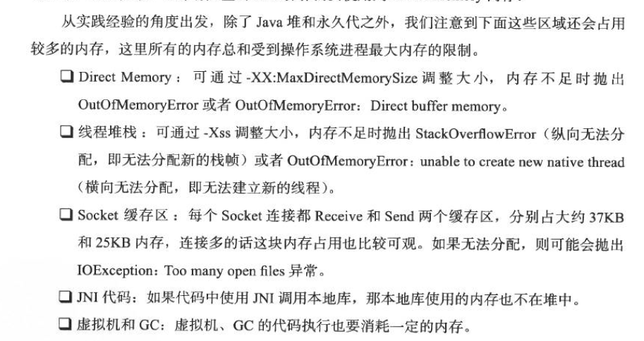

很多人错误的认为运行Java程序时使用-Xmx和-Xms参数指定的就是程序将会占用的内存，但是这实际上只是Java堆对象将会占用的内存。堆只是影响Java程序占用内存数量的一个因素。要更好的理解你的Java程序将会占用多大的内存需要先了解有哪些因素会影响到内存的占用。这些因素包括：
- 对象(Objects)
- 类(Classes)
- 线程(Theads)
- 本地数据结构(Native data structures)
- 本地代码(Native code)

每个因素对内存占用的影响又会随着应用程序、运行环境和系统平台的不同而变化，那怎样计算总的内存占用量？是的，想得到一个准确的数字不是那么容易，因为你很难控制本地(Native)部分。你能控制的部分只有堆大小：-Xmx，类占用的内存：-XX:MaxPermSize，还有线程栈：-Xss控制每个线程占用的内存。所以，计算公式为：
(-Xmx) + (-XX:MaxPermSize) + 线程数 * (-Xss) + 其它内存
其它内存部分取决于本地代码占用的内存，如NIO、socket缓冲区、JNI等。它一般大约是jvm内存的5%左右。所以假设我们有下面的JVM参数和100个线程：
-Xmx1024m -XX:MaxPermSize=256m -Xss512k
那么jvm进程至少会占用内存数量为：1024m + 256m + 100*512k + (0.05 * 1330m) = 1396.5m
我一般使用(1.5 * 堆最大值)来作为一个近似值表示一个tomcat进程会需要的最小内存，如果你有需要增加MaxPermSize到256M以上的应用这个值可以更大些。如果你使用这个来衡量你的系统将会占用多少内存要记住你需要为系统和其它运行在系统上的程序留下足够的内存，否则会导致系统使用过多的虚拟内存，这样会降低性能。